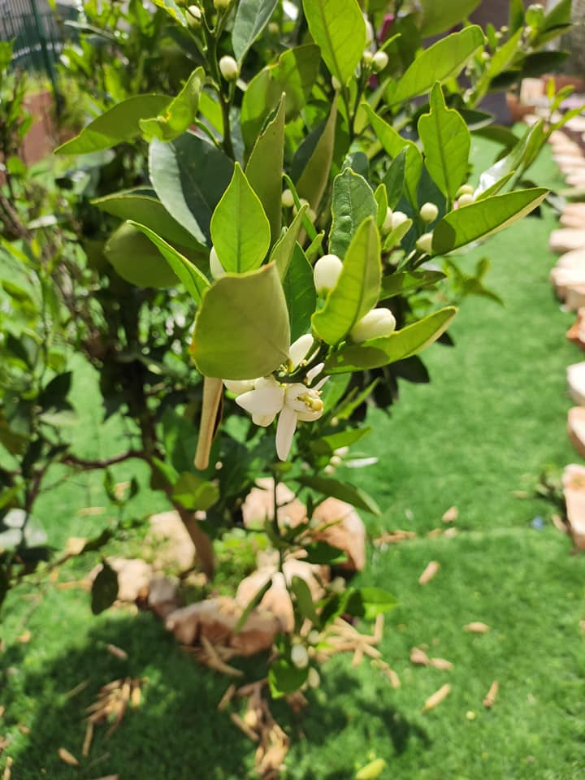
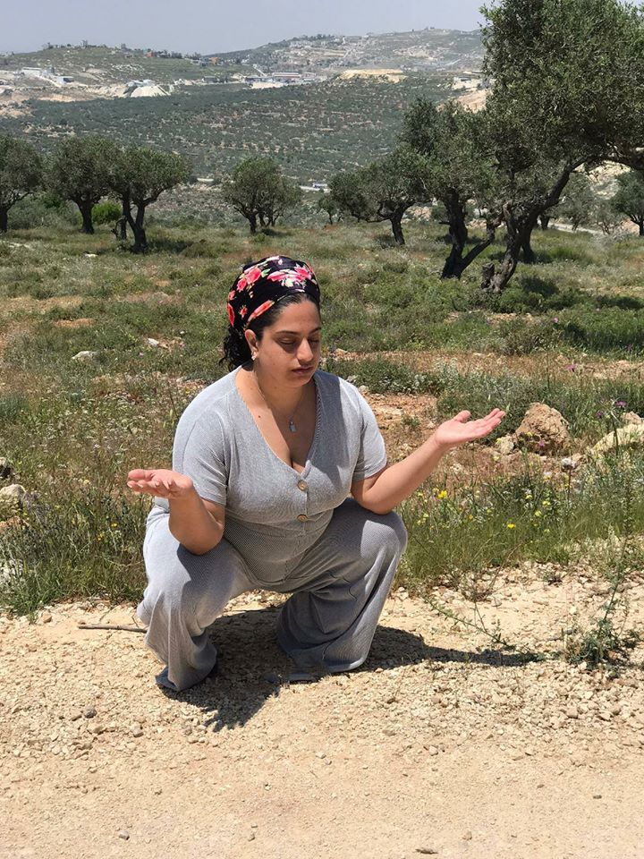
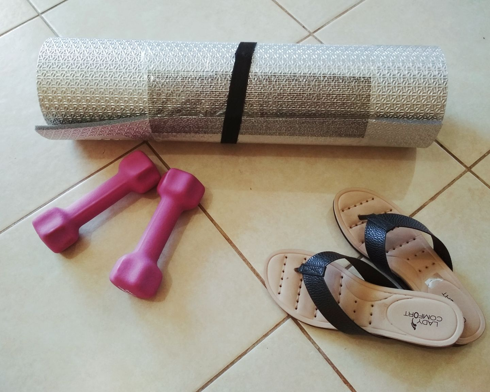
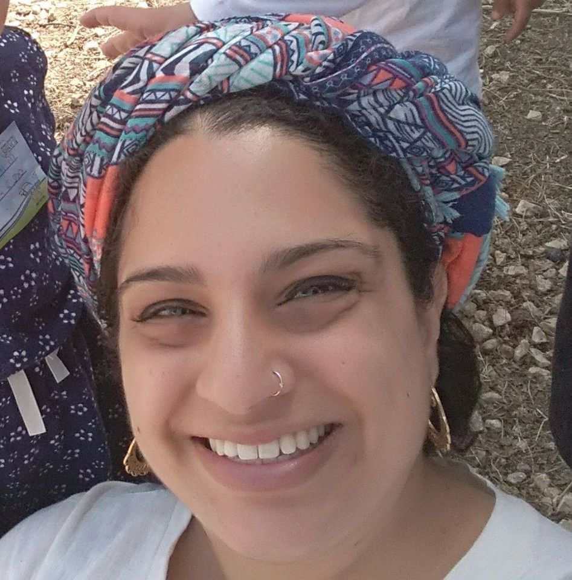

מוזמנות לעקוב אחרי גם כאן:


יעל רון- רפואה סינית לנשים
שמי יעל רון, ואני מטפלת ברפואה סינית- דיקור, שיאצו, וצמחי מרפא, מזה כארבע שנים. עיקר
התמחותי, ואהבתי היא טיפול בנשים, בכל הבעיות השונות המלוות אותן, בכל שלב בחייהן. עיקר
ההתמקדות שלי היא בטיפולים גניקולוגיים, ובבעיות עיכול שונות.
אני בוגרת בית הספר מירב לרפואה משלימה, מטעם האו"פ. וחברה באגודה לרפואה סינית
מסורתית. הלמידה שלי לעולם לא מפסיקה. אני לומדת באופן עצמאי, ובתוך מסגרות לימודים שונות,
כל הזמן, כדי לרכוש עוד כלים, ועוד דרכים לעזור ולסייע.
במשך השנים, טיפלתי בנשים רבות
שהתמודדו עם בעיות מגוונות ושונות בתחומים שונים בחייהן.
לכל אישה שמגיעה אלי יש דרך לעבור. אני יושבת איתה יחד, לשיחה כדי להבין ולשמוע. בהמשך,
אני מאזינה לגוף על ידי אבחון במגע, נקודות שונות, בידיים, בצוואר, בגב או בבטן, לפי הצורך.
הטיפול עצמו מתחלק לטיפול בדיקור ובשיאצו, כל פעם לפי הצורך הספציפי של האישה מולי. הכל
מתוך כבוד ורגישות.
אני מאמינה שלכל אחת מאיתנו יש את הזכות לאי של רוגע, ובריאות. למקום מוגן ובטוח.
אני
מאמינה שלגוף יש כוחות ריפוי מדהימים, ואני פה רק כדי לעזור להם להתממש.
אני מאמינה
במקצועיות, ביושרה, ולמידה, כדי להביא לטיפול את הטוב ביותר.
אני תמיד אומרת שאני רק
השליחה הטובה כדי להקל, ולעזור.
בקליניקה שלי ניתן למצוא מוצרים שונים, כריות חימום מדהימות למצבים אורטופדיים, צמחי מרפא,
וכמובן טיפים, רעיונות, המלצות תזונה מותאמות אישית, ועוד.
ניתן להגיע לטיפולים בודדים, או
לרכוש סדרת טיפולים במחיר מוזל.
מעוניינת לשמוע עוד, או להתייעץ ?
הכניסי את פרטייך כאן, ואשמח לעמוד לשרותך!
מוזמנת גם להתקשר: 052-8972189
בריאות ושפע טוב.
יעל רון
שומרון
052-8972189הרב צבי יהודה 6
052-4625547מרטין בובר 6
055-6655443לפרוח
להודות
להתמתח
להתבונן
להירגע
לחייך
